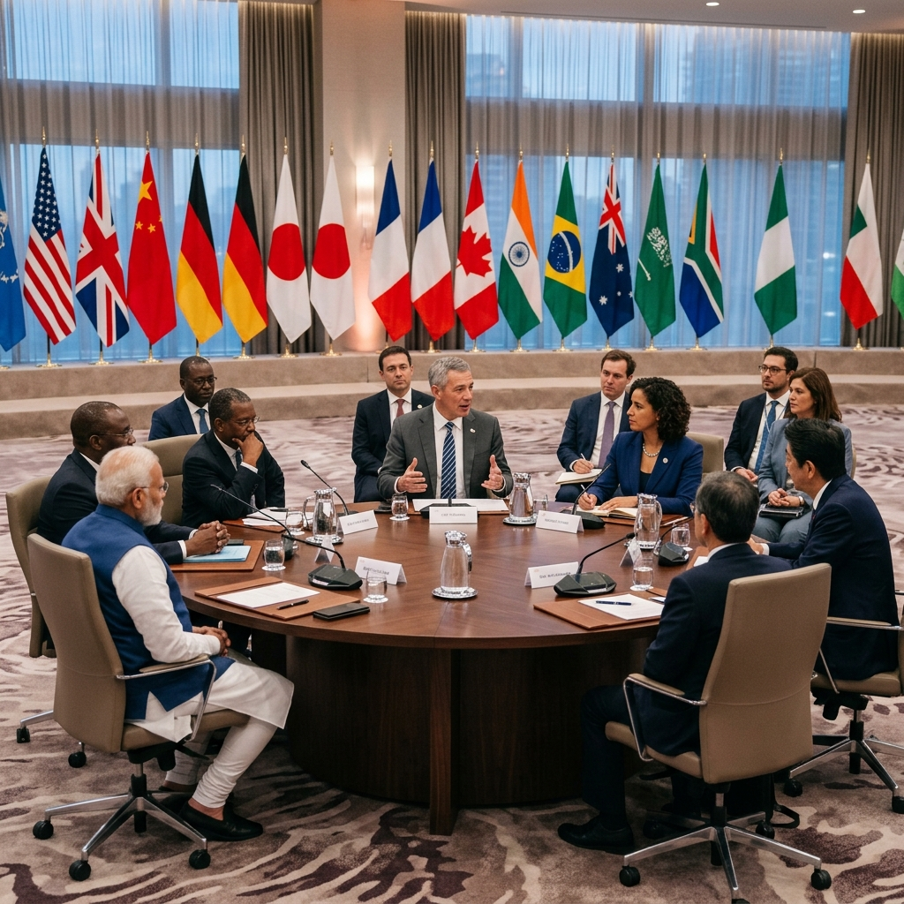
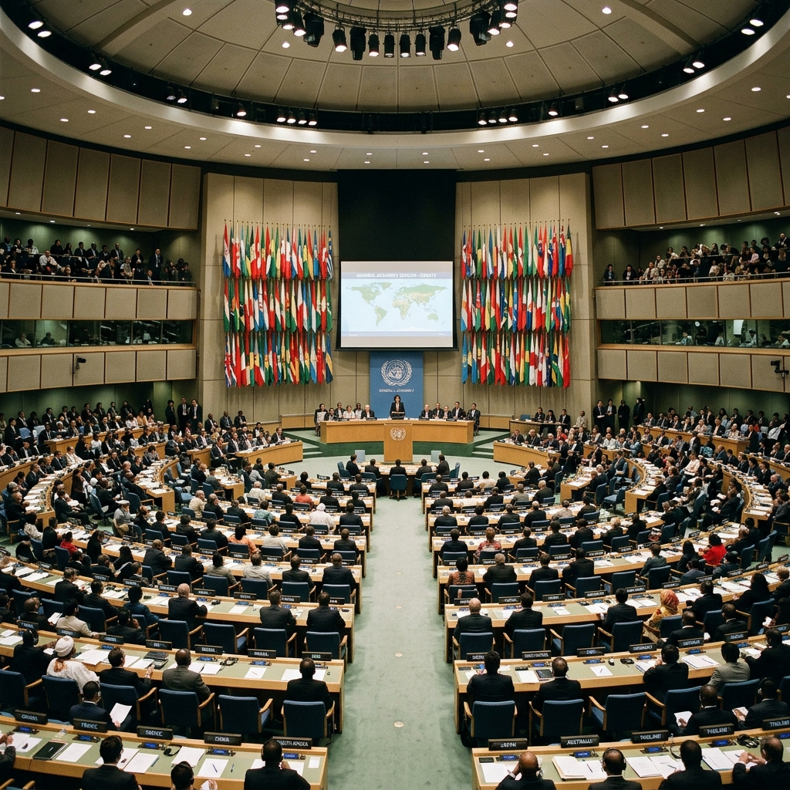

The G20 comprises 19 countries, the European Union, and the newly admitted African Union. Click the header above for detailed outcomes of the New Delhi, Rio, and Johannesburg declarations.
| Edition | Year | Host City / Country | Key Theme & Outcomes |
|---|---|---|---|
| 18th | 2023 | New Delhi, India | Vasudhaiva Kutumbakam; admitted African Union (making it G21); launched Global Biofuels Alliance |
| 19th | 2024 | Rio de Janeiro, Brazil | "Building a Just World and a Sustainable Planet"; launched Global Alliance Against Hunger and Poverty |
| 20th | 2025 | Johannesburg, South Africa (Nasrec Expo Centre, Nov 22–23) | "Solidarity, Equality, Sustainability" (Ubuntu spirit); first G20 summit on African soil; 122-paragraph Leaders' Declaration adopted on Day One; US (Trump) boycotted (Argentina too; Xi/Putin absent); launched Mission 300 (electricity to 300 million Africans by 2030); $1.3 trillion climate-finance goal by 2035; Cost of Capital Commission UPDATED |
| 21st | 2026 | Doral, Florida, United States (Trump's Doral resort) | US presidency; Troika = South Africa–US–UK NEW |
| 22nd | 2027 | United Kingdom | Upcoming NEW |
| 23rd | 2028 | South Korea | Upcoming NEW |
BRICS now has 11 full members — Indonesia joined in January 2025 — plus a new "partner country" tier. Click the header above to view details of the expansion, country lists, and the 2024 Kazan Summit in Russia.
Click the header above to explore the SCO institutional profile, Tashkent RATS details, and the accession of Belarus as the 10th member.
Click the header above to explore G7 summit locations (Apulia, Kananaskis, Évian-les-Bains) and the detailed outreach agenda.
| Summit | Year | Location | Focus Area |
|---|---|---|---|
| 50th | 2024 | Borgo Egnazia, Apulia, Italy | AI ethics, migration corridors, and Africa-Mediterranean partnership |
| 51st | 2025 | Kananaskis, Alberta, Canada | inclusive economies, energy security, and 50th G7 anniversary |
| 52nd | 2026 | Évian-les-Bains, France | Global supply chains, critical minerals, and digital governance NEW |
| Summit | Year | Host / Chair | Key Outcomes |
|---|---|---|---|
| 47th ASEAN Summit | Oct 26–29, 2025 | Kuala Lumpur, Malaysia | Theme "Inclusivity and Sustainability"; Timor-Leste admitted as the 11th member on Oct 26, 2025 — first expansion since Cambodia (1999) |
| 48th ASEAN Summit | 2026 | Philippines | Theme "Navigate our Future, Together" (Singapore chairs 2027) |
| 22nd ASEAN–India Summit | Oct 26, 2025 | Kuala Lumpur (PM Modi attended virtually) | Adopted Plan of Action 2026–30; declared 2026 = ASEAN–India Year of Maritime Cooperation; proposed Centre for Southeast Asian Studies at Nalanda University; sought AITIGA (ASEAN–India Trade in Goods Agreement) review |
| Summit | Year | Venue | Significance |
|---|---|---|---|
| AI Safety Summit | 2023 | Bletchley Park, UK | First global AI safety summit; Bletchley Declaration |
| AI Seoul Summit | 2024 | Seoul, South Korea | Frontier AI safety commitments |
| AI Action Summit | Feb 2025 | Paris, France | Co-chaired by PM Modi & President Macron (71st BPSC PYQ) |
| India AI Impact Summit | Feb 16–20, 2026 | Bharat Mandapam, New Delhi | First AI summit in the Global South — details below |
| Next Summit | 2027 | Geneva, Switzerland | Upcoming |
Click the header above to view detailed negotiations, Loss and Damage fund setups, and the New Collective Quantified Goal (NCQG) targets.
| Group | Member Count | Establishment Year | Permanent Secretariat |
|---|---|---|---|
| G20 (G21) | 21 (19 nations + EU + African Union) | 1999 | No permanent secretariat (runs on Troika) |
| BRICS | 11 full members + 10 partner countries | 2006 (BRIC), 2010 (BRICS) | No permanent secretariat |
| SCO | 10 member states | 2001 | Beijing, China (RATS is in Tashkent) |
| G7 | 7 (US, UK, France, Germany, Japan, Italy, Canada + EU) | 1975 | No permanent secretariat |
| NATO | 32 member states | 1949 | Brussels, Belgium |
| ASEAN | 11 member states (Timor-Leste joined Oct 2025) | 1967 | Jakarta, Indonesia |
| QUAD | 4 (India, US, Japan, Australia) | 2007 (revived 2017) | No permanent secretariat |
| Summit | Date | Venue | Headline Fact |
|---|---|---|---|
| 17th BRICS | Jul 6–7, 2025 | Rio de Janeiro, Brazil | Indonesia debuted as 11th member; India chairs next (2026) |
| 25th SCO | Aug 31–Sep 1, 2025 | Tianjin, China | Tianjin Declaration; condemned Pahalgam attack; SCO Development Bank endorsed |
| 47th ASEAN | Oct 26–29, 2025 | Kuala Lumpur, Malaysia | Timor-Leste = 11th member (first expansion since 1999) |
| 20th G20 | Nov 22–23, 2025 | Johannesburg, South Africa | First on African soil; US boycotted; Day-One 122-para Declaration |
| COP30 | Nov 10–22, 2025 | Belém, Brazil | "Global Mutirão"; adaptation finance ×3 by 2035; TFFF $125 bn |
| NATO Hague | Jun 24–25, 2025 | The Hague, Netherlands | 5% of GDP defence target by 2035 |
| India AI Impact Summit | Feb 16–20, 2026 | Bharat Mandapam, New Delhi | First AI summit in Global South; New Delhi Declaration (~88 nations) |
| Quad FMM | May 26, 2026 | New Delhi, India | Rubio attended; first Quad ministerial in India since 2023 |
| NATO Ankara | Jul 7–8, 2026 | Ankara, Türkiye | €70 bn Ukraine aid package |
| COP31 | Nov 2026 | Antalya, Türkiye | Australia = President of Negotiations; Pacific pre-COP |

